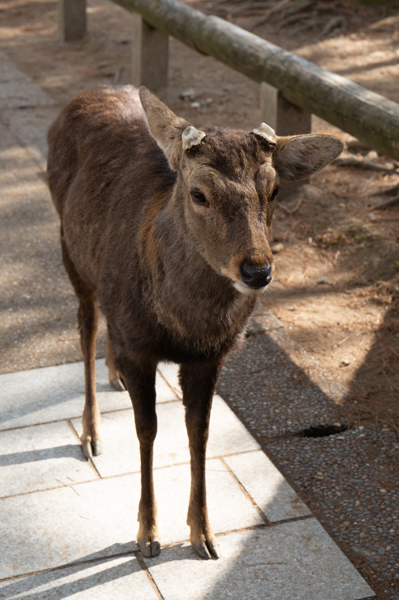
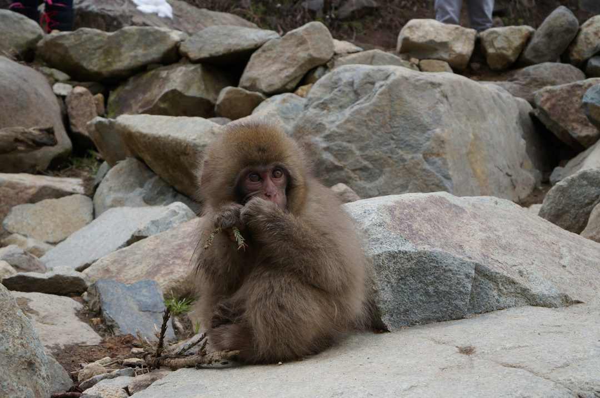
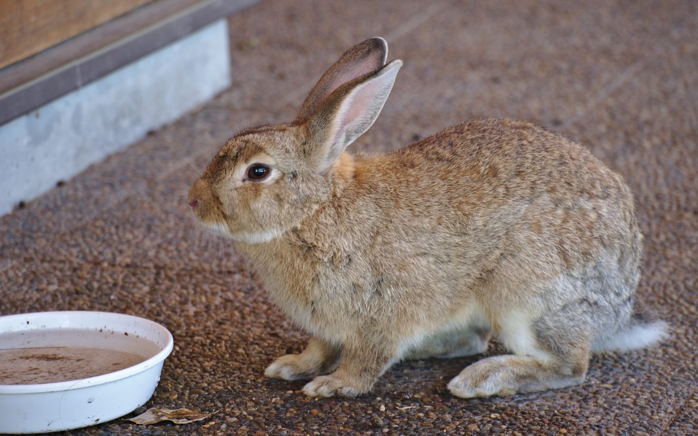
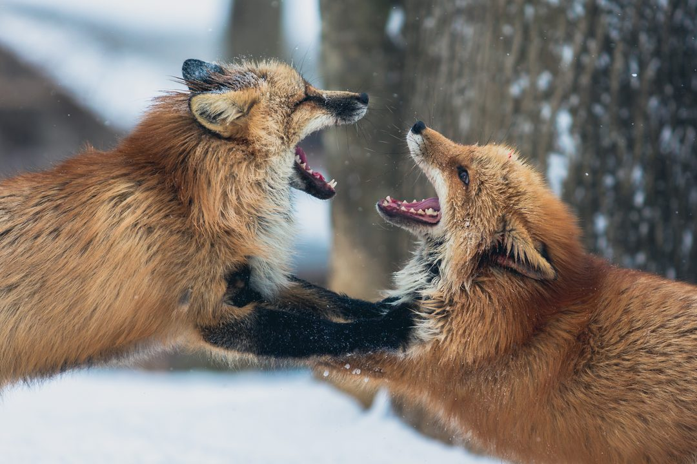
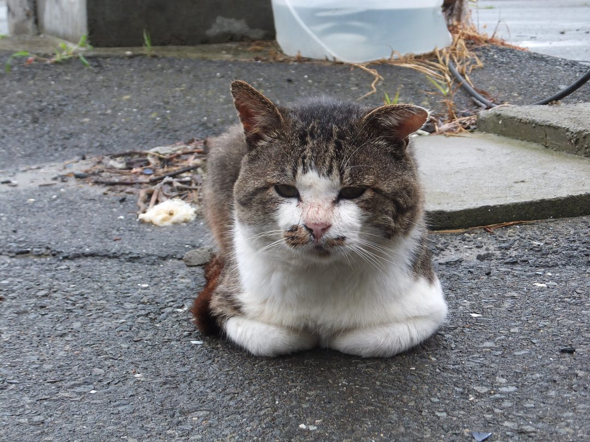

ANIMALS
★ ＴＯＰ ５ ★
Bow to deer, watch monkeys bathe in hot springs, get mobbed by bunnies — Japan's most unforgettable animal meetups.

NO.1
02

Jigokudani Monkey Park 地獄谷野猿公苑
World-famous macaques that soak in a natural hot spring to escape the winter cold — the original 'snow monkeys'.
03

Okunoshima 'Rabbit Island' 大久野島
A small Inland Sea island, once a secret WWII gas site, now home to hundreds of friendly rabbits that hop up to greet you.
04

Zao Fox Village 蔵王キツネ村
A mountain sanctuary with 100+ foxes (several species and color variants) roaming freely; you can walk among them and feed them.
05

Tashirojima 'Cat Island' 田代島
A tiny fishing island where free-roaming cats vastly outnumber residents, historically protected for good luck; a cat shrine sits on the island.
Photos: free-license / CC (Wikimedia · Unsplash · Pexels) — placeholder stock; final = shop-supplied.